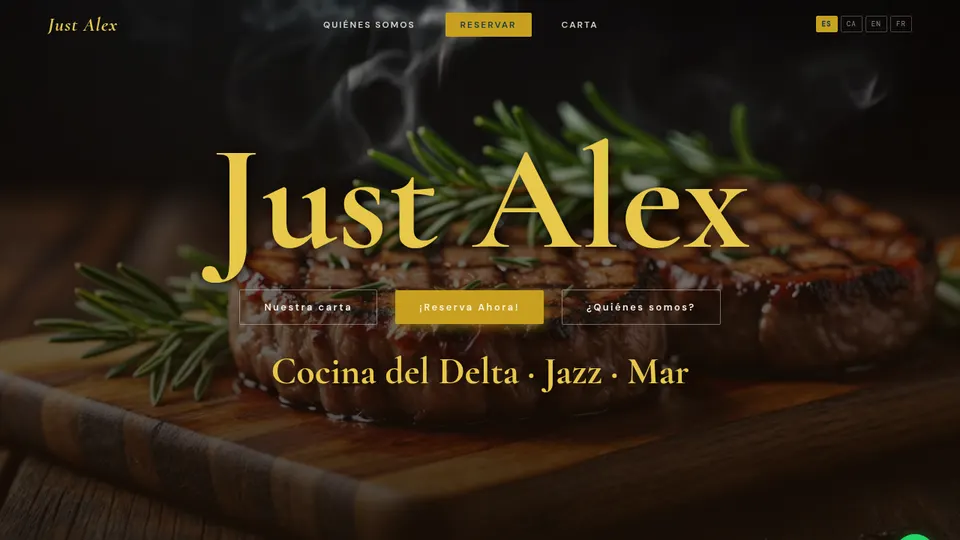
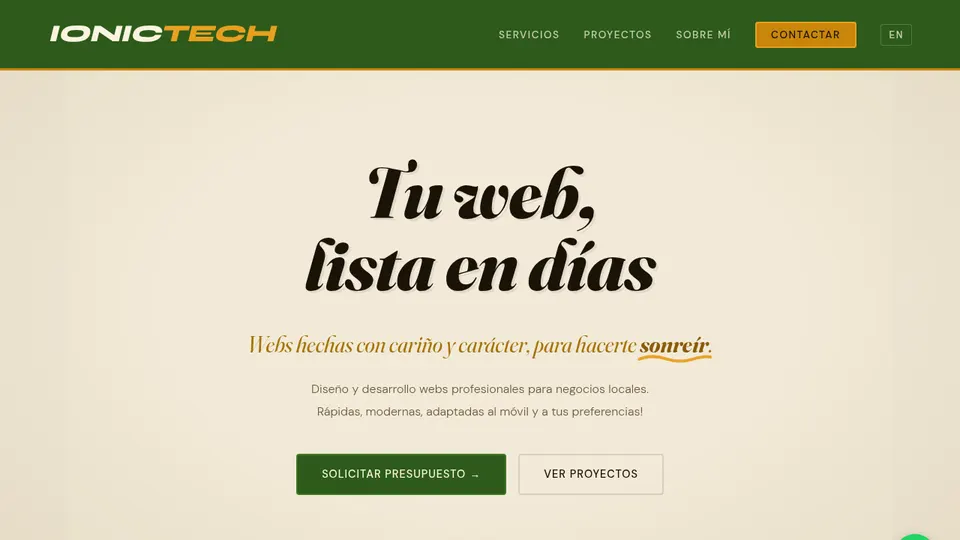
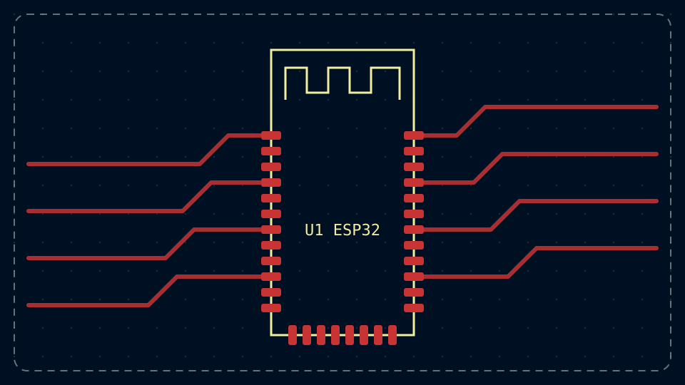
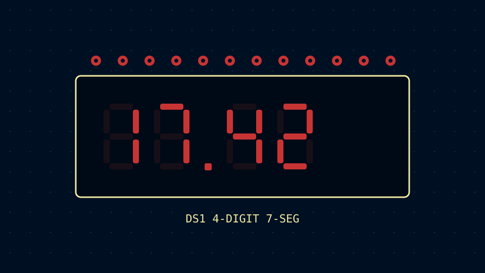
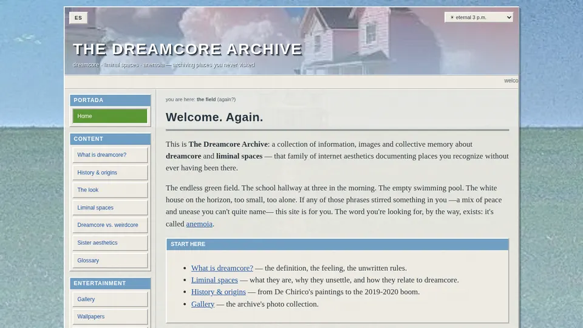
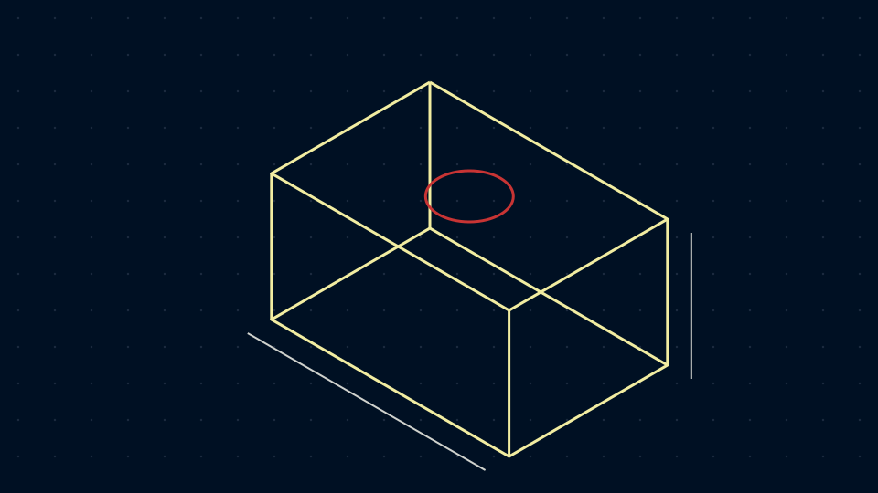

Just Alex
The family restaurant's website: design, deployment, maintenance and local SEO. My first freelance project in production.
Sheet: /yannis-florin-ionica/
Computer Engineering student at URV
I build websites for businesses and make hardware: I program ESP32s, design PCBs in KiCad and 3D print the enclosures. Based in L'Ampolla, in the Ebro Delta, Spain.
U1–U6 · 6 parts

The family restaurant's website: design, deployment, maintenance and local SEO. My first freelance project in production.
justalex.es · live

My project to bring small businesses online: lightweight websites with no heavy dependencies, optimized for local SEO and performance.
ionictech.dev · in development

A robot car with an ESP32 and a custom Android app that sends it movement commands over Bluetooth.
github.com/Yonniss/RoboCar

A speedcubing timer for the terminal: scrambles for 8 puzzles, ao5 and ao12 averages, DNF/+2 penalties and personal best detection.
github.com/Yonniss/termtimer

A static, bilingual web museum about the dreamcore aesthetic and the old web, with a music jukebox and gallery.
dreamcorearchive.org

Functional enclosures and prototypes for my electronics projects, modeled in CAD and printed on my own 3D printer.
hardware
Bill of materials
| Ref | Description | Date |
|---|---|---|
| Experience | ||
| X1 | Freelance web designerWebsites for local businesses, from briefing to maintenance. | Feb 2026 – now |
| X2 | Staff and digital, Just AlexHelping since 2022. Built the restaurant's website and help out front of house. | Dec 2025 – now |
| Education | ||
| F1 | BSc Computer EngineeringUniversitat Rovira i Virgili | 2026 – now |
| F2 | High school, Science and TechnologyInstitut de Camarles | 2024 – 2026 |
| F3 | Linux Introduction & PersonalizationHack4u Academy | certificate |
| F4 | Google Data Analytics Professional CertificateGoogle | in progress |
U7 · 22 pins